O Problema de 3 Corpos
Simulações utilizando método de LGU-discretizada
Sistema Sol-Mercúrio-Terra com dados reais:
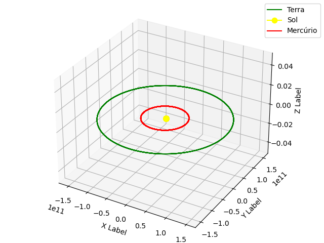
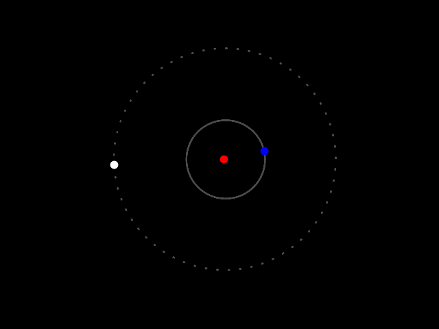
Sistema de 3 corpos idênticos:
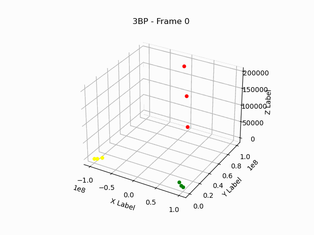
Órbita periódica 1
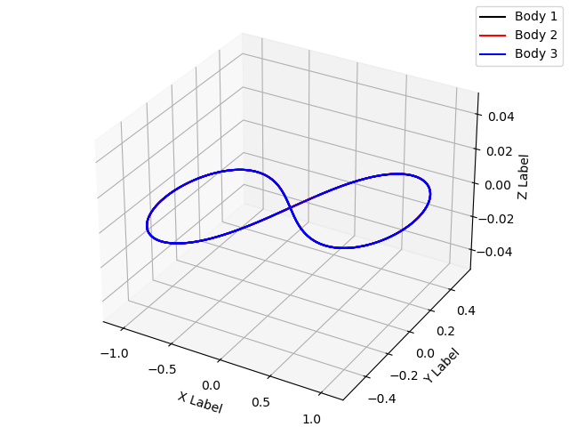
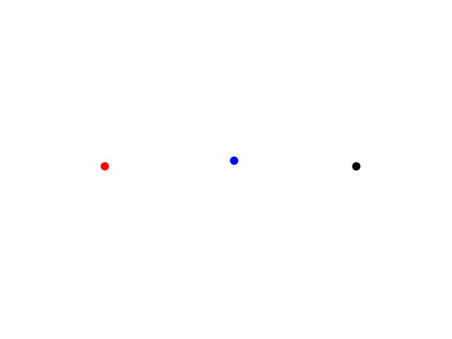
Órbita periódica 2
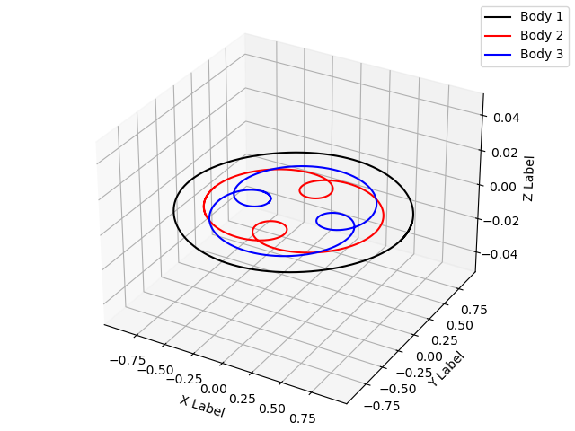
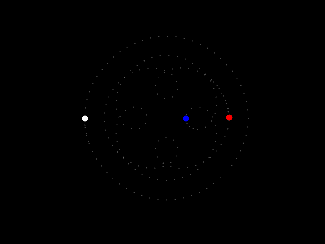
Órbita caótica
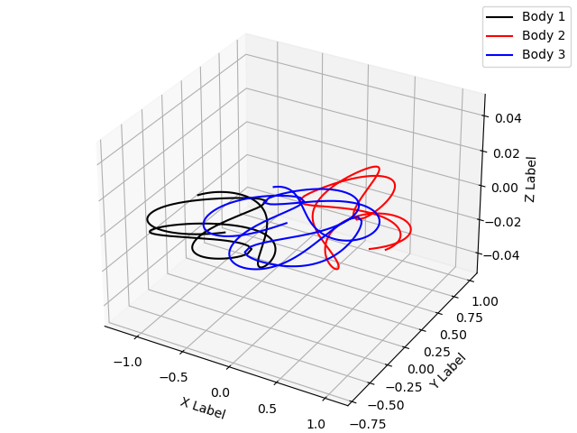
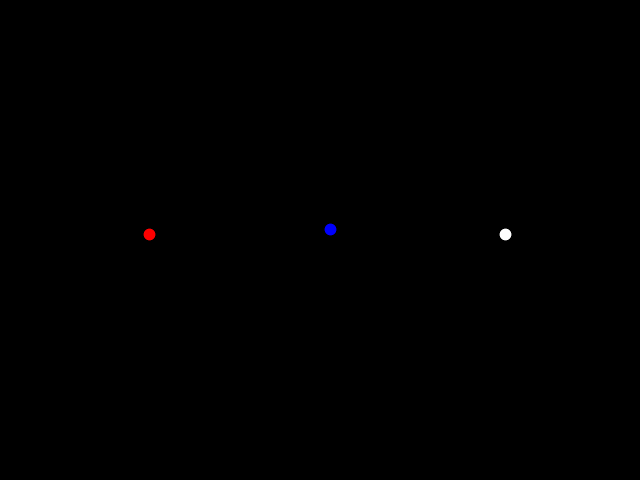
2 body orbit
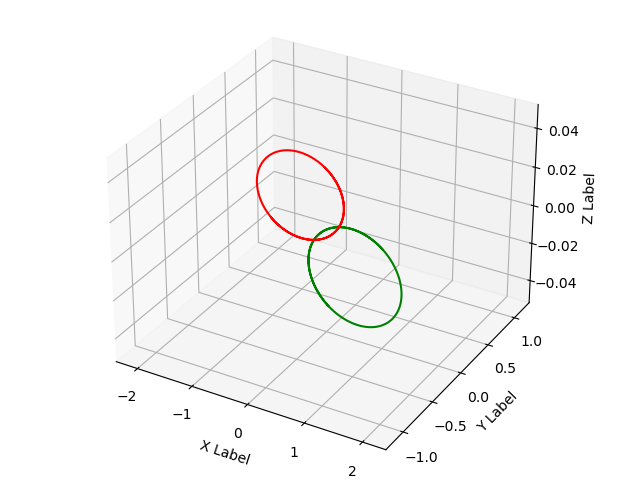
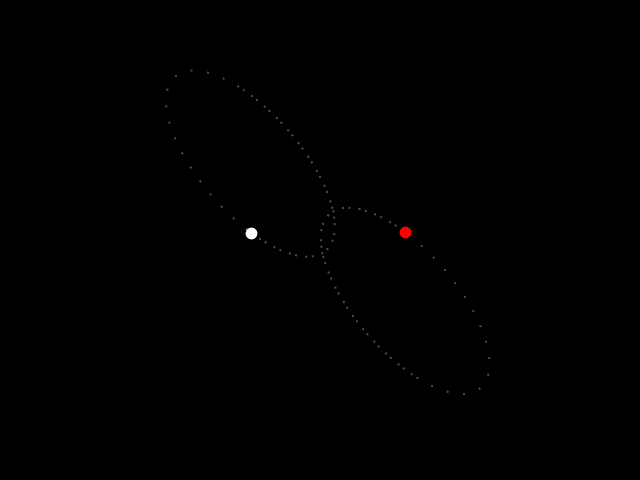
circular orbit
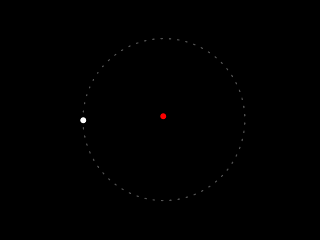
Lotka-Volterra
Considerando o sistema diferencial: \[\begin{cases} \displaystyle\frac{dQ}{dt}=\alpha\left(1-\frac{Q}{K_Q}\right)-\beta PQ\\ \displaystyle\frac{dP}{dt}=\gamma PQ - \frac{P}{K_P} \end{cases} \] obtemos, com utilização da distribuição binomial para modelar a chance de cada indivíduo de se reproduzir e morrer, a seguinte série temporal e espaço de fase.
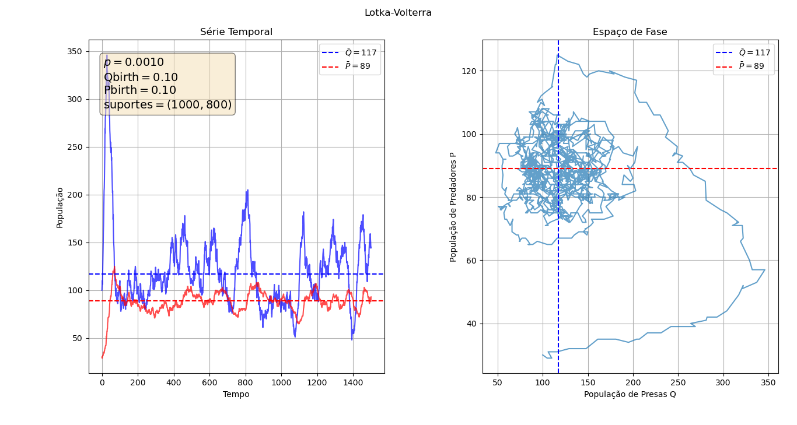